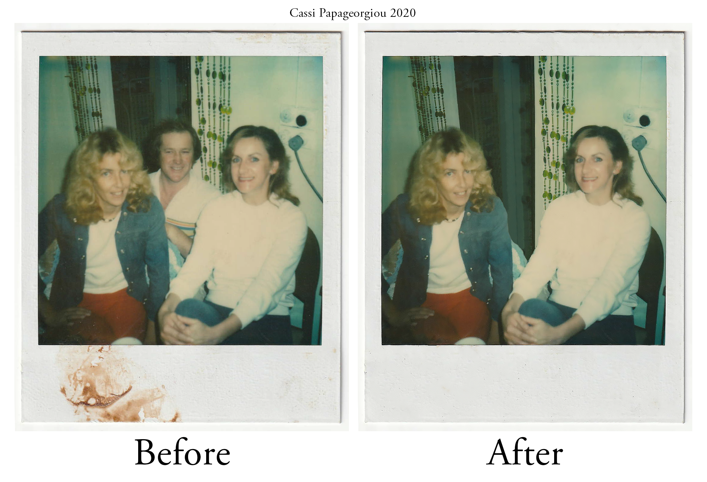
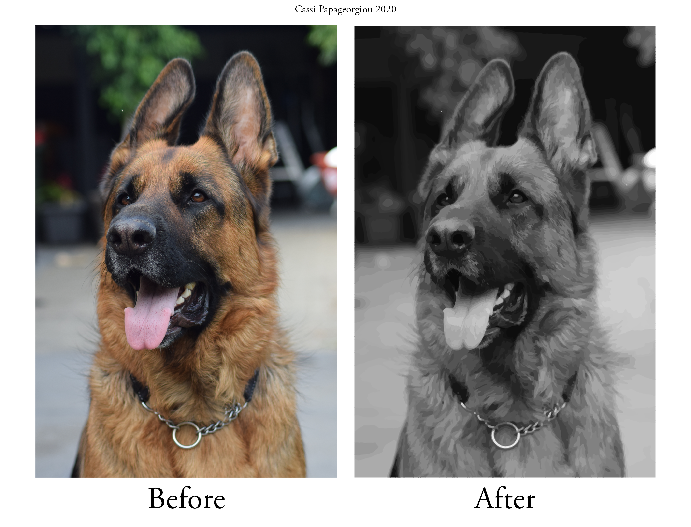

Digital Images Showcase
Project Brief
This project required a folio containing a range of images which demonstrate different imaging techniques.
The goal was to develop and present innovative images by experimenting with techniques, to develop our own style,
organise how the artwork is showcased and review our work for improvements.
This was achieved by capturing or locating suitable images, such as scanning old family photos that needed restoring.
All edits were done in Photoshop, except the image tracing.
Repair

This is an image of my Dads parents and I wanted to fix all the imperfections such as small bends/tears in the photo and other small damage.
For the most part I used the clone stamp tool to grab and replace textures from the surrounding damage.
Colourise

For my colourise image I found a pretty damaged picture of my mum. By this stage I had already completed my repair image so at first I used similar
techniques of using the clone stamp tool to repair all the damage and spots but found the healing tool was much better and natural.
Once the damage was repaired, I turned the image into a smart object, merged all the layers and converted it to black and white.
Then for each colour I created a new solid, inverted it, changed the blend option to soft light and used the brush tool to colour the image in.
By lowering the opacity at the time of painting, or after if I forgot, I found it gave a soft natural look.
I was sure to colour every bit of the image including the whites of the eyes and teeth and the skirt. The skin was the most difficult
and I used my knowledge of working in the Myer makeup counter to create multiple layers for the face such as a base skin layer,
colour for the cheeks, and shadow layers to add more depth so the skin wasn't as flat and ghostly. I also added a tiny bit of pink
to the corners of the eyes and around the lips which isn't noticeable but looked weird when I hid the layer after.
I found by colouring a little at a time and slowly building the colour, I was able to achieve a natural looking colour.
I also tried to colour in one brush stroke, without un-clicking the mouse and this added a nicer effect than a bunch of small brush strokes.
I made some adjustments to the end result such as curved and adding a photo filter to add a soft warm look and I was done!
I'm pretty happy with the result, considering this is my first time with this technique.
Edit
This photo that I decided to edit is a picture of my grandma and her cousin, with her ex-boyfriend in the background.
I thought it would be a challenge to see how well I could remove him from the picture.
At first I used the patch tool to trace around him and mimic the background but the quality wasn't very good.
Going in with the clone stamp and spot healing tool seemed to be more effective but took longer.
I did slightly rush this so there are a few noticeable differences like the beads behind the door looking a bit weird.
It was also difficult to blend the harsh line of the denim jacket on my grandma so I used the blur tool just to soften the
edge as this is quite a blurry image and has no sharp detail. I then used the healing tool to clean up the frame and sharpened the image slightly.
Image Trace - Shades of Gray
Using Illustrator, I experimented with different image traces and effects. This is an image of my dog Kruger that I took with my SLR. Using the ‘Shades of Gray’ Image Trace gave the image a soft painted look.
Image Trace - Silhouette
Here is another image I took of a bird on the power lines outside my house. I accentuated the silhouette look by using the ‘Silhouette’ image trace. This would be a simple and effective way of turning an image into a logo!
Upsize
I scanned this small image of my Great-Grandmother and used image size to enlarge to the two different sizes. Before upsizing I also used clone stamp and spot healing tool to remove little bits of damage to the photograph.

Edit
After repairing old images, I used a new image of a Buick that I took back in 2011 and turned it into a vintage style photo. I converted the image to black and white, used stock dust,
damage and paper textures to create and adjusted/added different layers and vignettes to achieve an old, damaged photo look.